Pose de carrelage
Intérieurs et extérieurs, posés avec précision et soin. Conseil dans le choix des matériaux.
Courroux · Vicques · Jura suisse
Pose de carrelage et rénovation de sols intérieurs et extérieurs, avec un savoir-faire artisanal, un sens du détail et des finitions impeccables.
Showroom à Vicques, ouvert 7j/7 sur rendez-vous
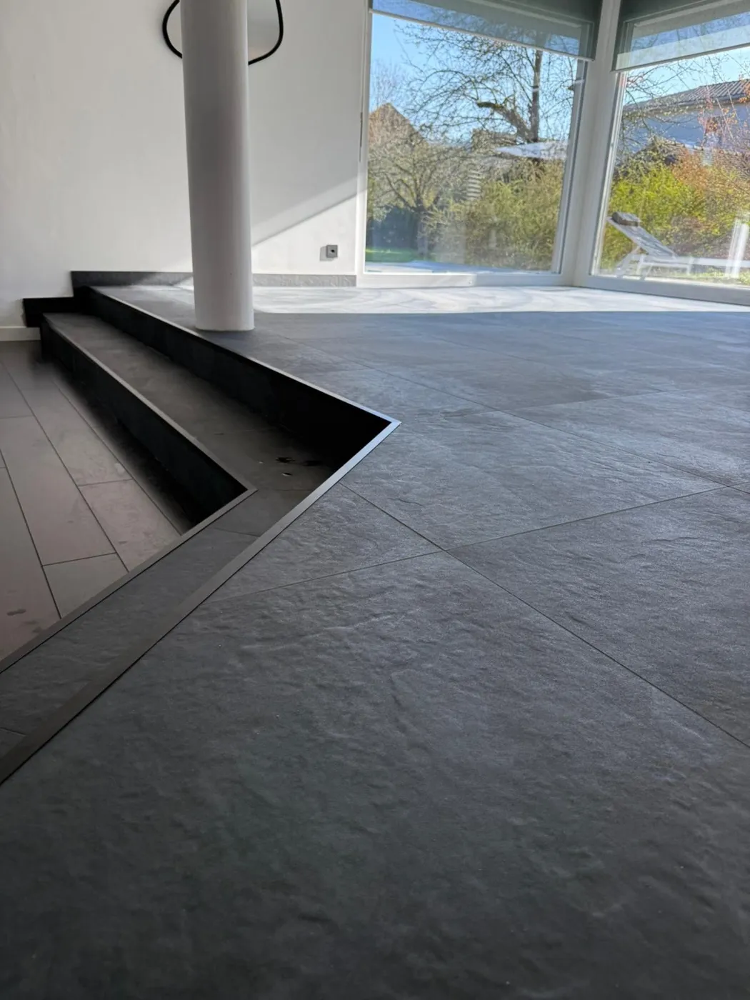
Nos services
Des solutions sur mesure pour tous vos projets. Nous vous accompagnons de A à Z, du choix des matériaux à la pose complète.
Intérieurs et extérieurs, posés avec précision et soin. Conseil dans le choix des matériaux.
Du caractère pour vos murs : cuisines, salles de bain et pièces de vie.
Des mosaïques uniques, posées avec minutie, pour des ambiances originales et sur mesure.
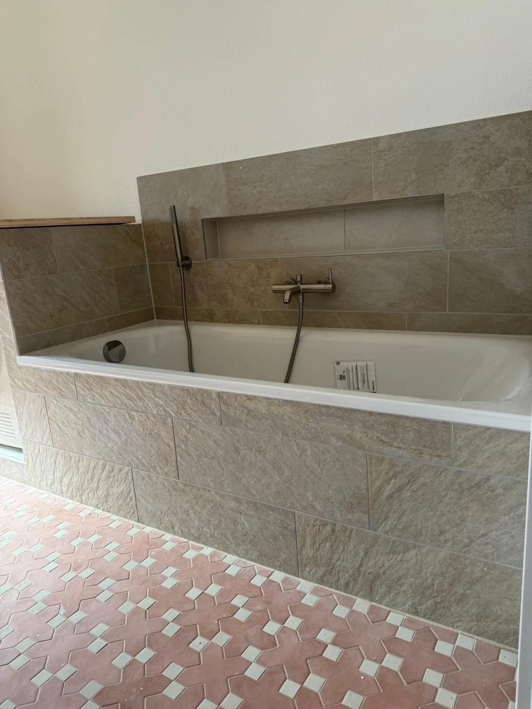
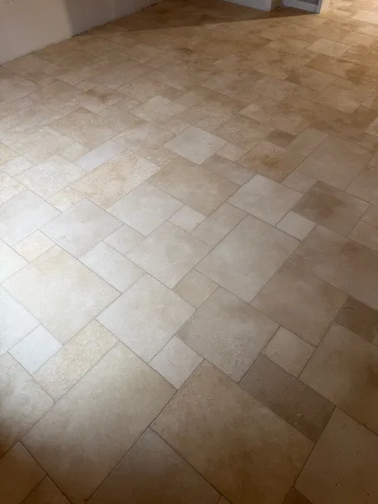
Charme et authenticité, en intérieur comme en extérieur, pour des finitions intemporelles.
Terrasses en dalles robustes, et chapes réalisées dans les règles de l'art.
Des sols esthétiques, résistants et adaptés à vos besoins.
Nos réalisations
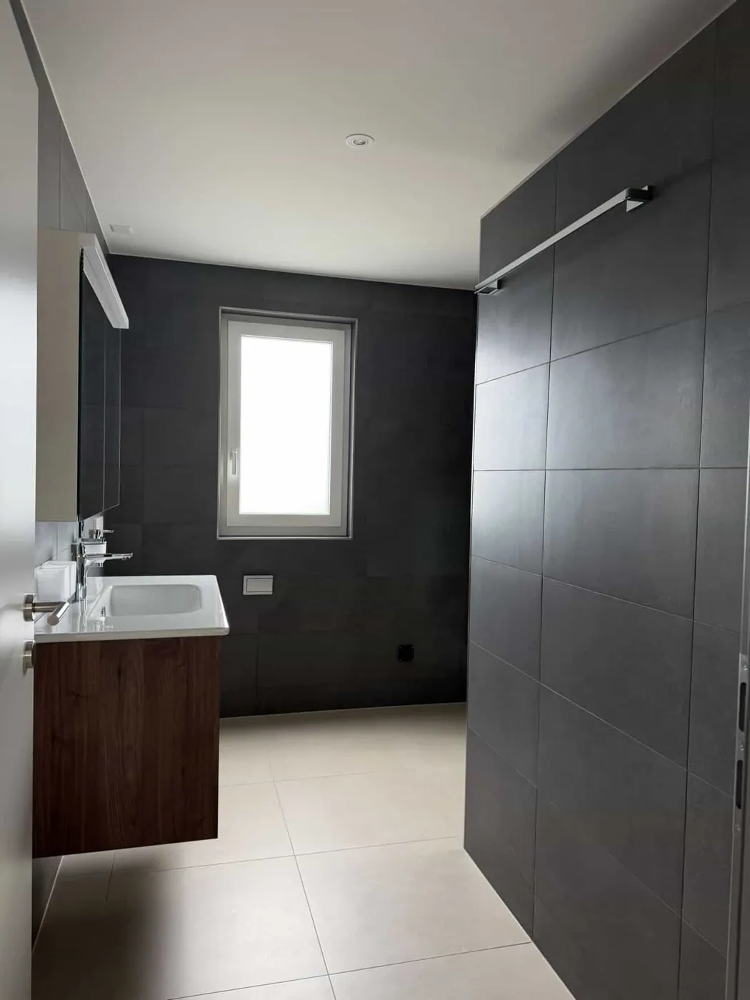
Salle de bain
Un espace classique transformé en un lieu moderne et élégant, grâce à un carrelage grand format finition mate dans des tons anthracite. Un style sobre et intemporel.
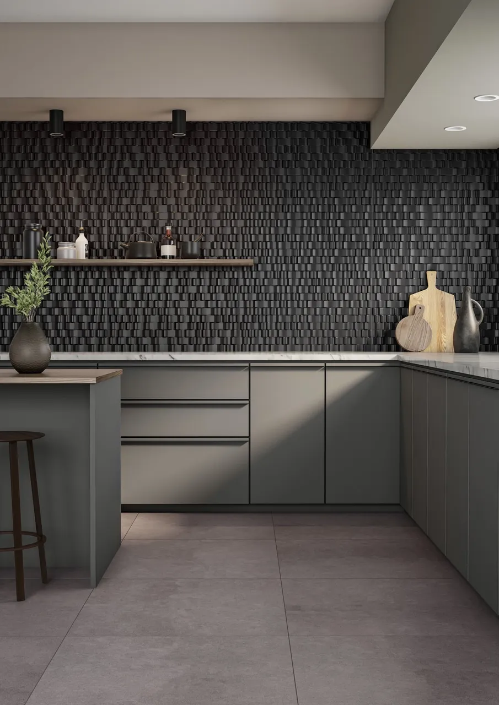
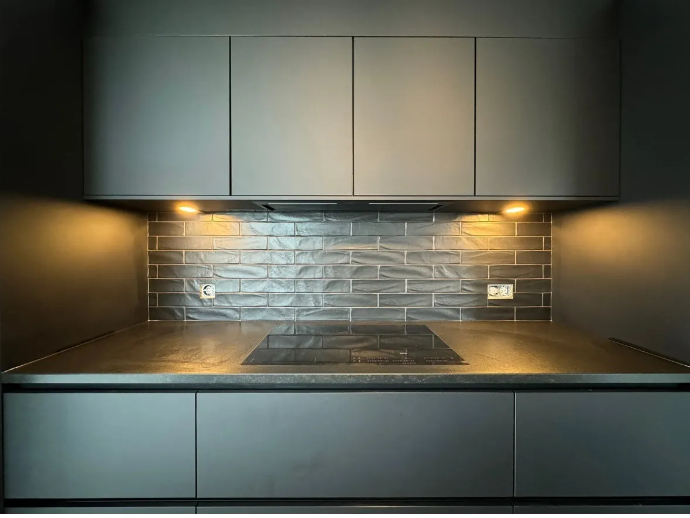
Cuisine
Une faïence effet zellige noir à la brillance subtile et aux reflets irréguliers. Loin d'assombrir l'espace, le noir sublime les matériaux et fait ressortir les lignes.
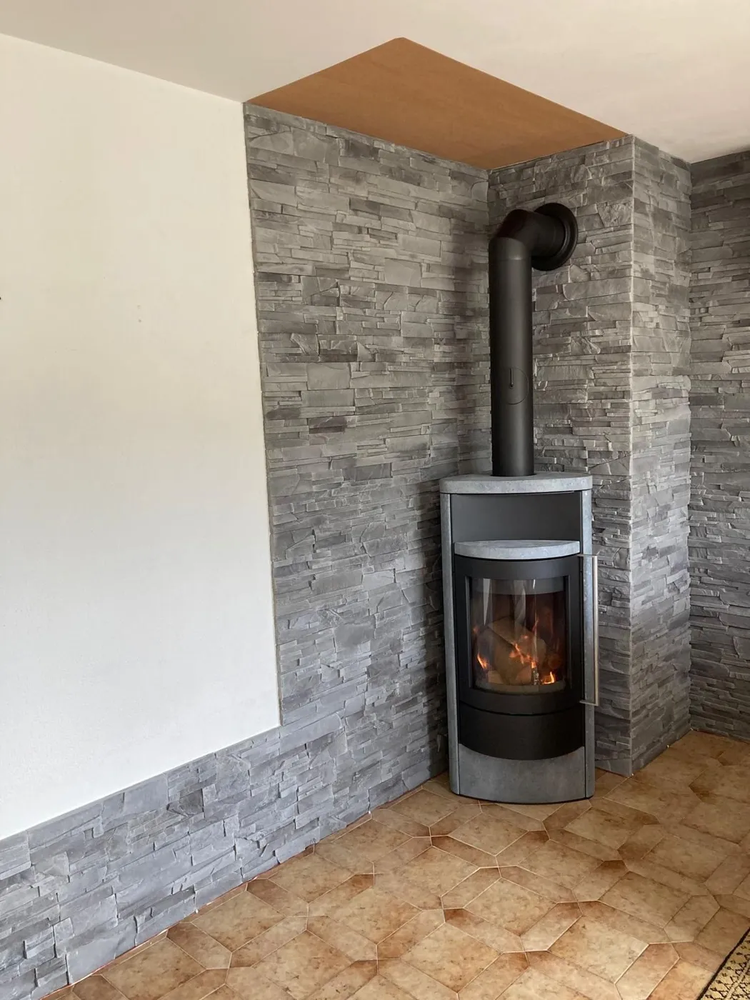
Pierre naturelle
Le mur arrière d'un poêle à bois habillé d'un parement en pierre naturelle, posé avec soin. Relief, authenticité et caractère : parfait pour créer un coin cocooning.
Showroom à Vicques
Un espace d'exposition chaleureux pour découvrir des matériaux de qualité et des ambiances inspirantes, et imaginer votre projet en réel. Ouvert 7j/7 sur rendez-vous.
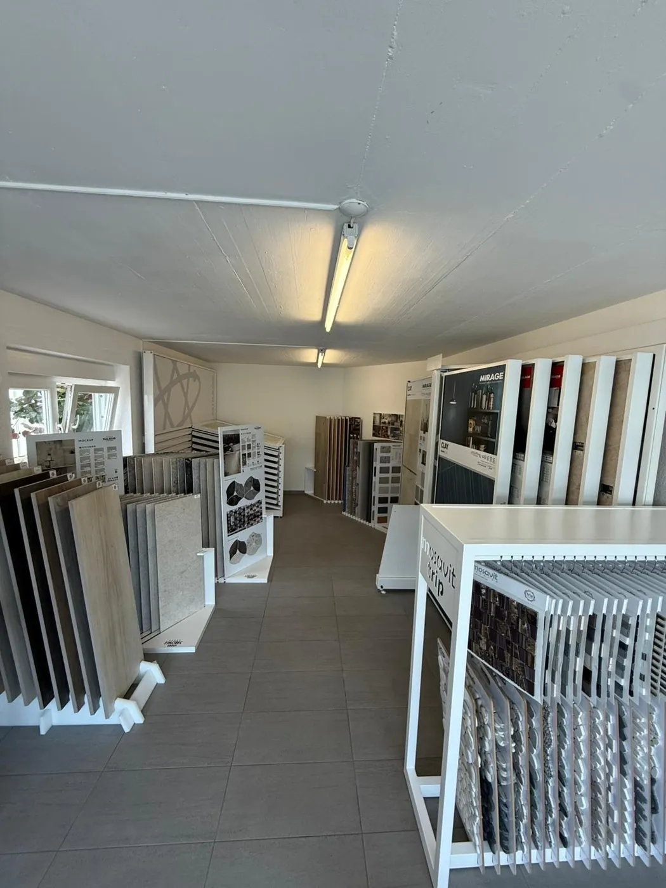
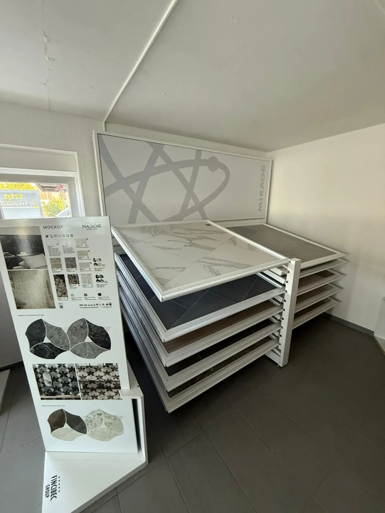
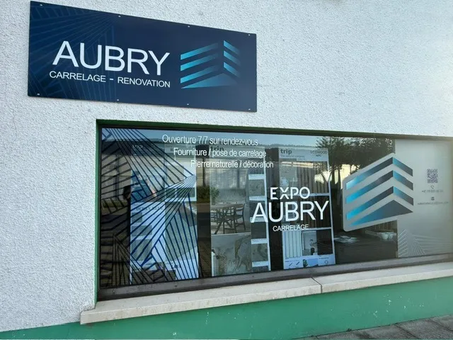
Chantiers chez nos clients
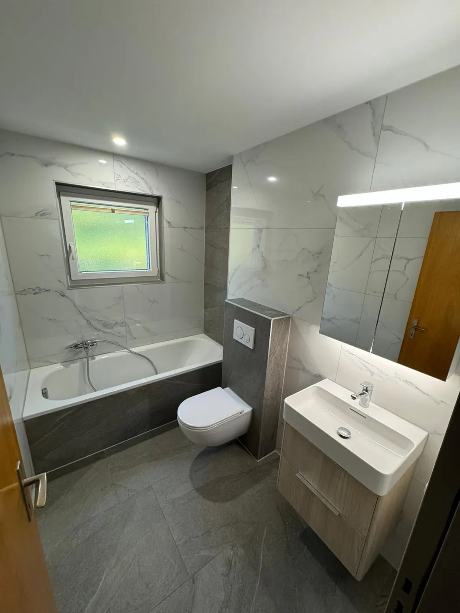
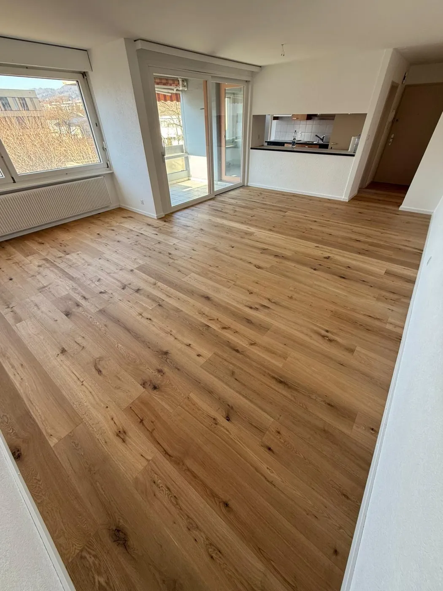
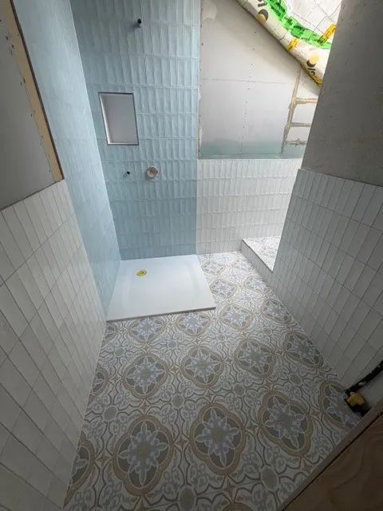
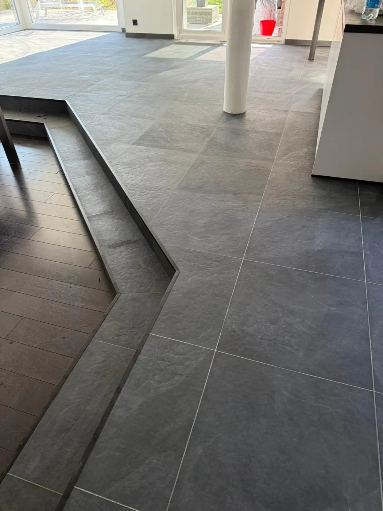
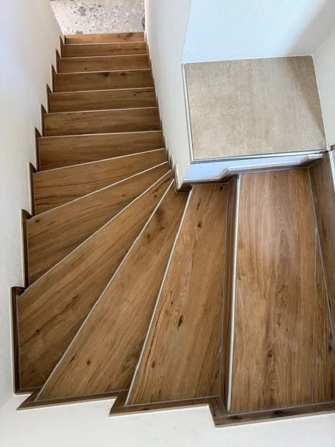
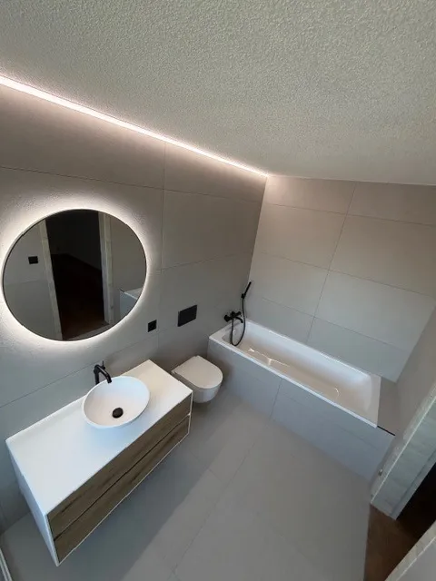
Carrelage · Faïence · Parquet · Pierre naturelle · Mosaïque · Dallage extérieur · Chape · Silicone · Rénovation · Vinyle
Contact & devis
Que vous soyez particulier ou professionnel, l'équipe d'Aubry Carrelage est à votre écoute. Contactez-nous ou passez nous voir au showroom.